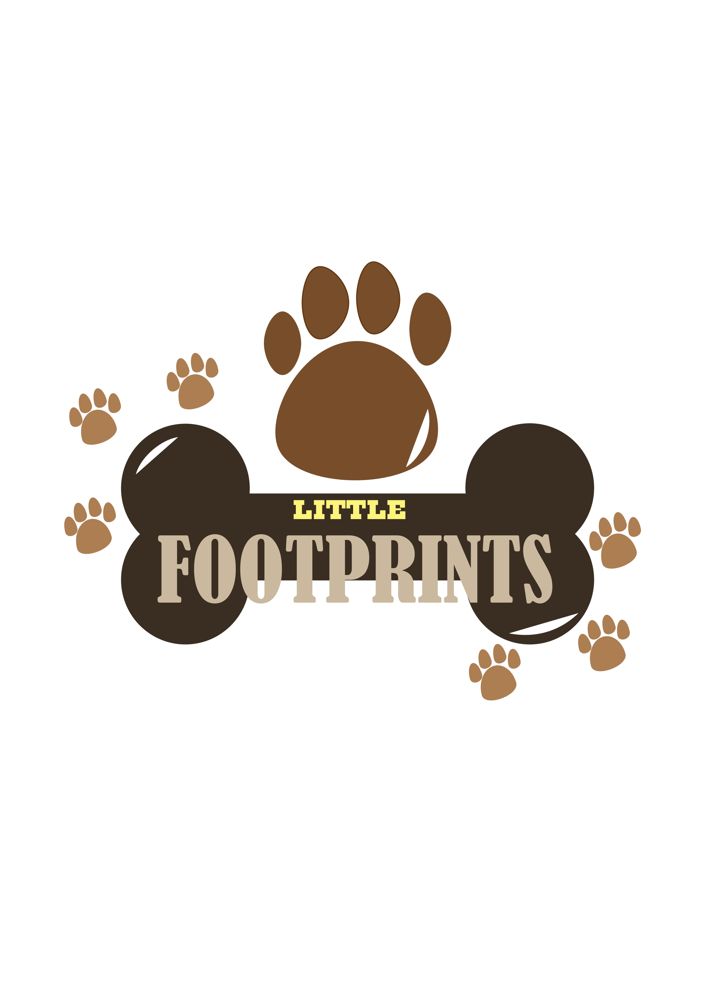

¿Quienes somos?
En Little Footprints, somos un equipo apasionado por el bienestar de las mascotas. Nuestra misión es cuidar a las huellitas con cariño, dedicación y profesionalismo, para que sus dueños puedan estar tranquilos sabiendo que están en buenas manos.
Ofrecemos un servicio seguro, amoroso y personalizado, brindado por un personal comprometido, capacitado y con verdadero amor por los animales. Nos esforzamos cada día por crear un ambiente de confianza, atención y respeto, donde cada mascota sea tratada como un miembro más de nuestra familia.
Porque entendemos que no son solo mascotas, son parte de tu vida… y también de la nuestra.
Nuestra historia
Little Footprints nació del amor incondicional hacia los animales y del deseo de ofrecer un lugar donde las mascotas fueran cuidadas como en casa. Todo comenzó cuando, como dueños responsables, notamos lo difícil que era encontrar un servicio que combinara seguridad, cariño y atención personalizada.
Fue entonces cuando decidimos crear un espacio donde las huellitas fueran la prioridad, y sus dueños tuvieran la tranquilidad de dejarlas en manos confiables. Con esfuerzo, capacitación constante y mucho corazón, hoy somos una comunidad comprometida con el bienestar animal y la felicidad de quienes los aman.
